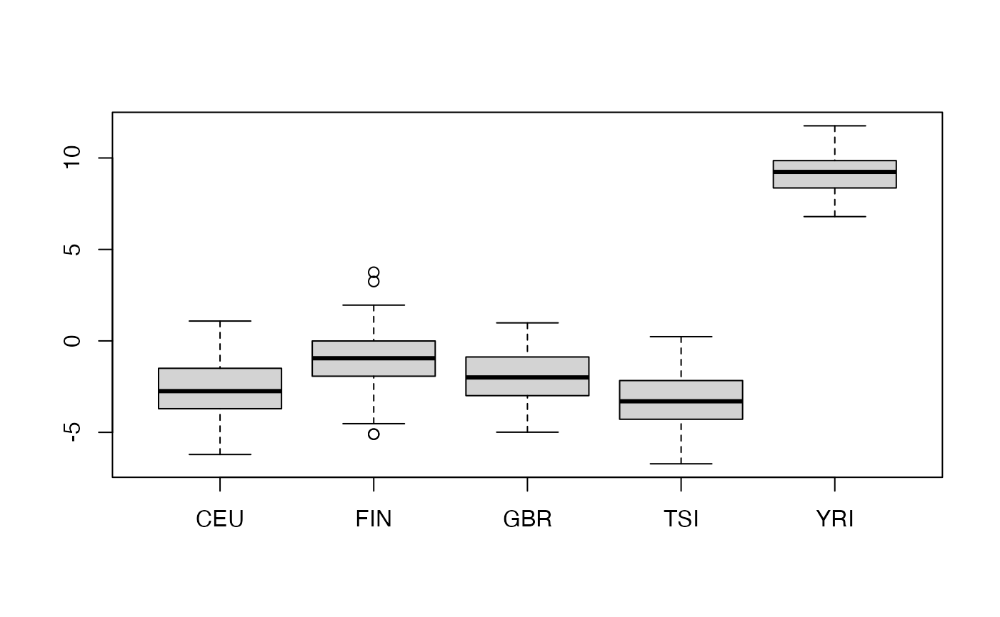

PlinkMatrix: DelayedArray interface to plink bed-type files
Vincent J. Carey, stvjc at channing.harvard.edu
February 14, 2026
Source:vignettes/PlinkMatrix.Rmd
PlinkMatrix.RmdIntroduction
Many genetic studies employ PLINK for data management and analysis.
This package facilitates interrogation of PLINK bed files through the Bioconductor DelayedArray protocol
Demonstration
The example_PlinkMatrix function will
- retrieve a zip archive from a cloud store if needed, and place it in the default BiocFileCache cache
- unzip the cached archive to bed, bim, fam files
- create the DelayedArray interface to the unzipped archive
The example data are those distributed with tensorQTL, transformed to bed using plink2.
library(PlinkMatrix)
gdemo = example_PlinkMatrix()
colnames(gdemo) = gsub("0_", "", colnames(gdemo))
gdemo## <367759 x 445> DelayedMatrix object of type "double":
## HG00096 HG00097 HG00099 ... NA20826 NA20828
## chr18_10644_C_G_b38 0 0 0 . 0 0
## chr18_10847_C_A_b38 0 0 0 . 0 0
## chr18_11275_G_A_b38 0 0 0 . 0 0
## chr18_11358_G_A_b38 0 0 0 . 0 0
## chr18_11445_G_A_b38 0 0 0 . 0 0
## ... . . . . . .
## chr18_80259028_AG_A_b38 1 2 2 . 0 1
## chr18_80259147_G_C_b38 0 0 0 . 0 0
## chr18_80259181_A_G_b38 0 0 0 . 0 0
## chr18_80259190_C_G_b38 1 0 0 . 1 0
## chr18_80259245_C_A_b38 0 0 0 . 0 0Sanity check
We will use ancestry information and approximate PCA to illustrate plausibility of the approach used here.
We have codes for the ancestral origins of samples.
##
## CEU FIN GBR TSI YRI
## 89 92 86 91 87We’ll take a random sample of 1000 SNP and retrieve 10 PCs, then visualize aspects of the reexpression to PCs for discriminating population of ancestry.
library(irlba)
set.seed(1234)
ss = sort(sample(seq_len(nrow(gdemo)), size=1000))
pca = prcomp_irlba(t(gdemo[ss,]),10)
pairs(pca$x[,1:4], col=factor(g445samples$Population.code), pch=19, cex=.5)

SummarizedExperiment wrapper; subsetting with GenomicRanges
data(example_GRanges)
library(SummarizedExperiment)
nse = SummarizedExperiment(list(genotypes=gdemo),
rowData=example_GRanges, colData=g445samples)
nse## class: RangedSummarizedExperiment
## dim: 367759 445
## metadata(0):
## assays(1): genotypes
## rownames(367759): chr18_10644_C_G_b38 chr18_10847_C_A_b38 ...
## chr18_80259190_C_G_b38 chr18_80259245_C_A_b38
## rowData names(0):
## colnames(445): HG00096 HG00097 ... NA20826 NA20828
## colData names(5): Sex Population.code Population.name
## Superpopulation.code Superpopulation.name
little = GenomicRanges::GRanges("chr18:1-100000")
subsetByOverlaps(nse, little)## class: RangedSummarizedExperiment
## dim: 353 445
## metadata(0):
## assays(1): genotypes
## rownames(353): chr18_10644_C_G_b38 chr18_10847_C_A_b38 ...
## chr18_99977_C_T_b38 chr18_99998_G_A_b38
## rowData names(0):
## colnames(445): HG00096 HG00097 ... NA20826 NA20828
## colData names(5): Sex Population.code Population.name
## Superpopulation.code Superpopulation.name